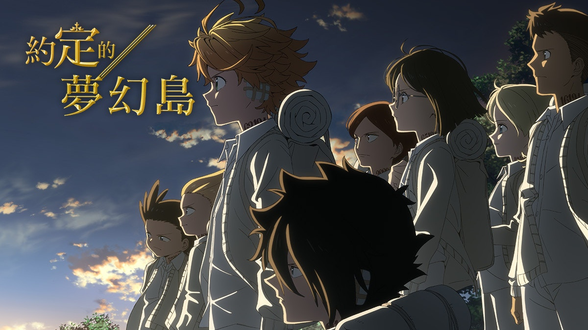
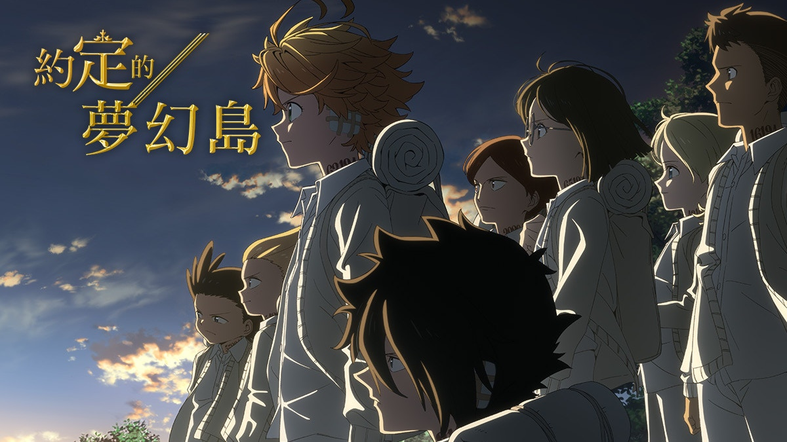
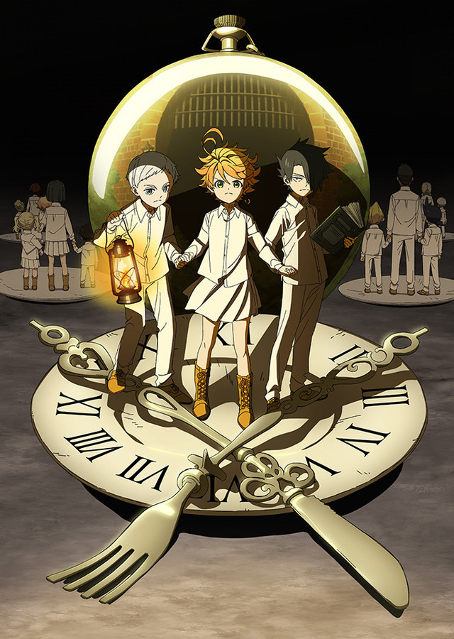

願你們的未來能有光芒照耀
《約定的夢幻島》故事敘述，孤兒院「Grace Field House」是一所夢幻般的孤兒院。無憂無慮的生活在孤兒院的孩子們，雖然沒有人去過孤兒院的柵欄和大門外，但能吃飽穿暖、還有溫柔的教育員「媽媽」照顧，且只要到達六歲就有可能被領養出去。而孤兒中最年長的三位十一歲孩童：艾瑪、諾曼以及雷，就這樣與其他孩子們一同生活了數年。
但誰知道在某日一位女孩被領養走，為了讓她帶上心愛的玩偶而追到門口的艾瑪等人，卻因此發現了恐怖的真相，圍繞在他們身邊的幸福景像其實是險惡重重的地獄，而成長到十二歲就可以被領養的傳聞，實際上是被當成養殖的肉豬販賣，所謂被囑咐不要翻過的圍牆，是因為外面就是鬼的廚房。當孩子們了解到殘酷的真相，夥伴們一個個被怪物當成肉食販賣時，激烈的逃脫即將展開。
主要角色
艾瑪 編號：63194
本作主人公，GF最年長的三人之一，GF第3號農場培育出的“特上等”。
擁有過人的運動能力和學習能力，熱愛著自己的孤兒院和媽媽，一直想著怎樣才能追上優秀的諾曼和雷。在發現了孤兒院的秘密以及“鬼”存在的事實後開始與諾曼，雷策劃出逃。
諾曼 編號：22194
GF最年長的三人之一，GF第3號農場培育出的“特上等”。
擁有過人的智商、冷靜的頭腦及強悍的邏輯思維。雖然測試成績三人並列第一，但艾瑪、雷偶爾有不是滿分的情況，諾曼則是無一例外全部滿分。
小時候身體不好，即使長大了還是體弱。和艾瑪一同目擊了科尼“出貨”的瞬間，之後與艾瑪、雷合作策劃越獄。

雷 編號：81194
GF最年長的三人之一，GF第3號農場培育出的“特上等”。
運動能力和智商一樣超乎常人，學習能力和動手能力尤為突出。自製了使發信器無效化的設備。
有超憶症，幼年就知道了鬼的存在。6歲起策劃逃離GF計劃，初期作為媽媽伊莎貝拉的內奸，但被其作為工具利用，加上知曉農場的真相，所以並沒有體驗過其他孩子的“幸福”童年。，但事實上是站在艾瑪一方的“雙重間諜”。
動畫
目前約定的夢幻島動畫發行第二季，
不過因為魔改的關係，不少人都對於動畫有所意見，因為第一季播畢，還不確定是否有下一季，
緊接著漫畫版又迎來完結，但動畫因為疫情影響，所以延宕了很久...
但又因為改編的劇情讓觀眾無法接受，動畫版的評價也是好壞參半。
也有種草草完結的感覺，真的很可惜...
最終結局
目前約定的夢幻島已經在2020年6月正式完結，
雖然不是歡樂大結局，不少人還是覺得已經算是不幸中的大幸了，畢竟太歡樂結局對約定的夢幻島來說有點假...
太多人領便當或是不幸福的結局也叫人難過，所以算是好壞參半的結局，
也有很多人認為結局有點太過倉促、進展太快，評論區網友們紛紛表示這漫畫是不是被腰斬...
畢竟約定的夢幻島算是很不JUMP的作品，但一開始看就可以讓你停不下來的劇情，
雖然中途劇情讓人感覺拖戲，但約定的夢幻島不失為一部好作品，畢竟前期的橋段真的讓人印象深刻。
如果你最近想要換點口味，可以試試看約定的夢幻島喔！